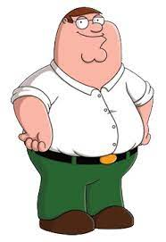

Jeff Deacon

Things to know about Jeff
- Favorite Color: Blue
- Favorite Animal: Wombat
As a classically trained bellerino I have had the pleasure of escaping from Soviet Russia. I remeber a brisk Berlin morning where just after breakfest I pirouetted over the Berlin wall into West Germany.
From then on I put by ballet shoes away and focused my energies on technology. I played numerous Atari 2400 games collecting a number of highscores.